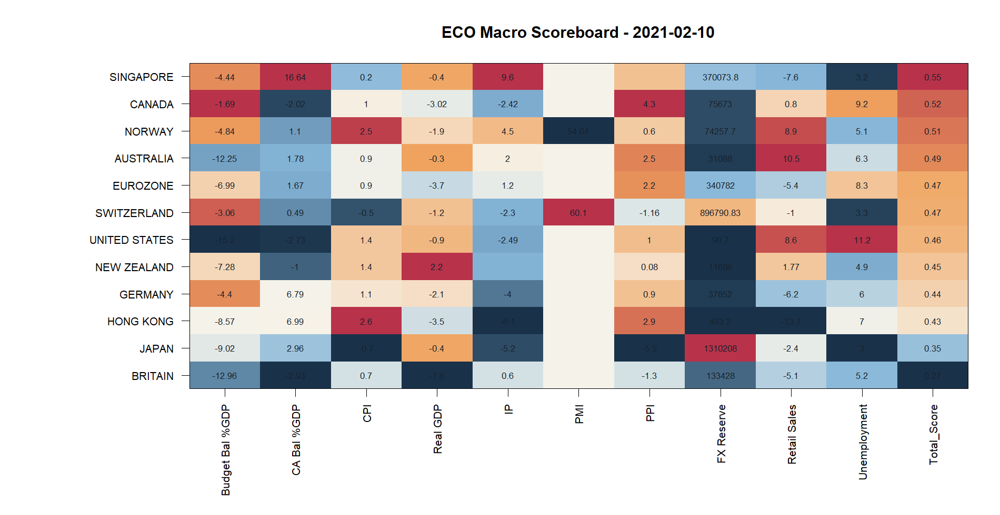
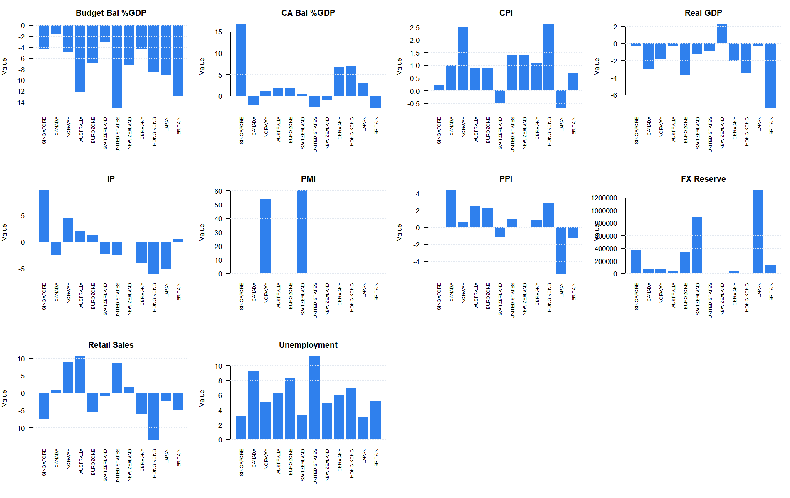
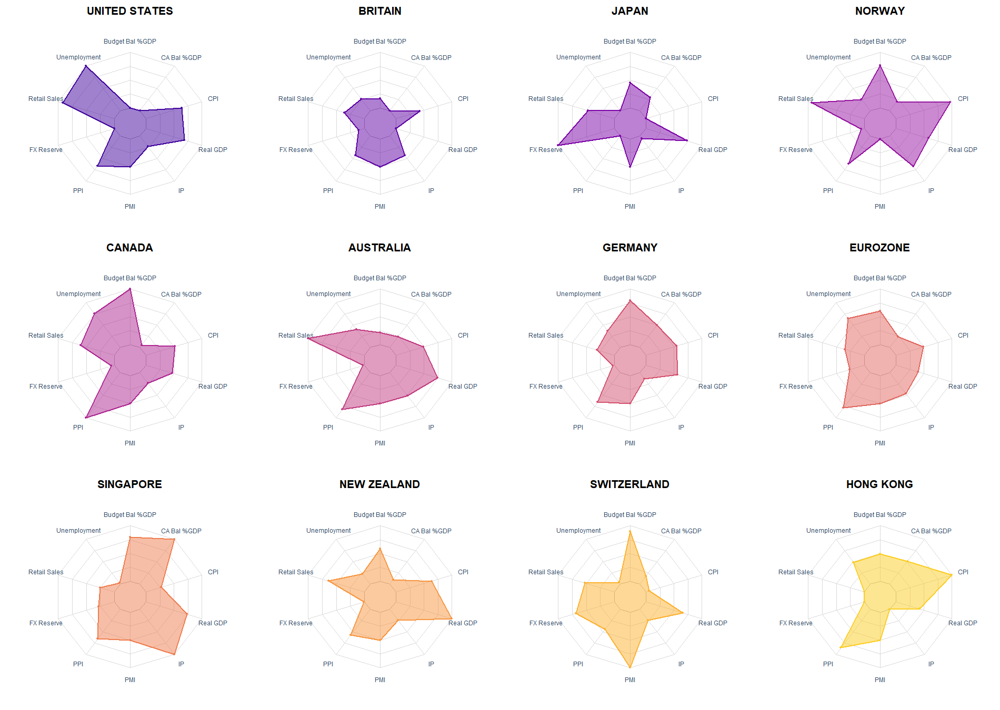

| Country | Budget Bal %GDP | CA Bal %GDP | CPI | Real GDP | IP | PMI | PPI | FX Reserve | Retail Sales | Unemployment | Total_Score |
|---|---|---|---|---|---|---|---|---|---|---|---|
| SINGAPORE | -4.44 | 16.64 | 0.2 | -0.400 | 9.60 | NA | NA | 370073.800 | -7.600 | 3.2 | 0.5515790 |
| CANADA | -1.69 | -2.02 | 1.0 | -3.021 | -2.42 | NA | 4.30 | 75673.000 | 0.800 | 9.2 | 0.5176253 |
| NORWAY | -4.84 | 1.10 | 2.5 | -1.900 | 4.50 | 54.04 | 0.60 | 74257.700 | 8.900 | 5.1 | 0.5068297 |
| AUSTRALIA | -12.25 | 1.78 | 0.9 | -0.300 | 2.00 | NA | 2.50 | 31088.000 | 10.500 | 6.3 | 0.4947127 |
| EUROZONE | -6.99 | 1.67 | 0.9 | -3.700 | 1.20 | NA | 2.20 | 340782.000 | -5.400 | 8.3 | 0.4725605 |
| SWITZERLAND | -3.06 | 0.49 | -0.5 | -1.200 | -2.30 | 60.10 | -1.16 | 896790.830 | -1.000 | 3.3 | 0.4717735 |
| UNITED STATES | -15.20 | -2.73 | 1.4 | -0.900 | -2.49 | NA | 1.00 | 90.702 | 8.600 | 11.2 | 0.4644946 |
| NEW ZEALAND | -7.28 | -1.00 | 1.4 | 2.200 | NA | NA | 0.08 | 11686.000 | 1.769 | 4.9 | 0.4512415 |
| GERMANY | -4.40 | 6.79 | 1.1 | -2.100 | -4.00 | NA | 0.90 | 37852.000 | -6.200 | 6.0 | 0.4394179 |
| HONG KONG | -8.57 | 6.99 | 2.6 | -3.500 | -6.10 | NA | 2.90 | 493.200 | -13.700 | 7.0 | 0.4261268 |
| JAPAN | -9.02 | 2.96 | -0.7 | -0.400 | -5.20 | NA | -5.50 | 1310208.000 | -2.400 | 3.0 | 0.3517371 |
| BRITAIN | -12.96 | -2.93 | 0.7 | -7.600 | 0.60 | NA | -1.30 | 133428.000 | -5.100 | 5.2 | 0.2670808 |